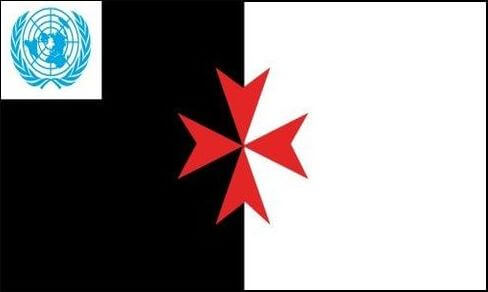
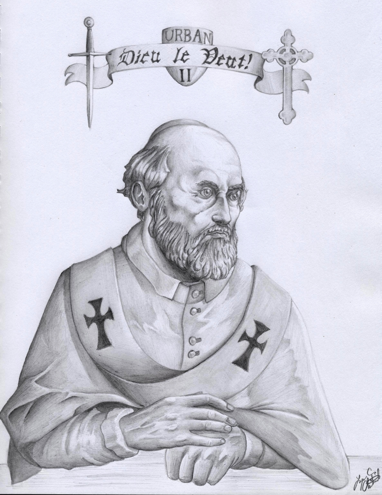

- Just for Fun
- other Informations
- Books to Read
- other Groups OSMTH KTA SMOTJ
History
Historie
Kasaysayan
Histoire
Vergangenheit
Welcome to the Middle Ages
-
Before the crusades, people lived more or less like animals. They were woefully ignorant. Food was prepared by boiling or frying, spices - except salt and pepper was hardly known. People eat everything from snails, toads to cranes and horses. There were no potatoes, tomatoes, rice, no coffee - no tea. One kind of greenish - smelling cheese. Accommodations were appalling and infested with fleas and lice. A peasants hut was one room with no floor cover and no window. Children, Parents and Grand Parents lived together in that one room dwelling. Everything was done there, from cooking, sleeping, relieve themselves and sex in full view of all others. Inside a castle it was not much better, maybe like today in a one star hotel in Bangladesh. The feudal system made sure that any person was treated like rubbish from the Landlord. There was no outcry "Dieu li volt!" - YET!
-
Believe it or not!
What changed the peoples way of live - from the poorest, naive to the richest educated person? Their behavior, thinking, working and eventually their complete way of doing things? It was the plow. Yes - the plow was used already since the Egyptians. but it was made out of wood. Carved from a piece of tree-branch where one - splits into two. This plow was very difficult to direct in a straight and equal deep furrow and very often broke when pulled to hard by an ox. Around the year 1000 the metal moldboard was introduced and soon after a wheel was added. Now the soil could be turned over more efficient and the nutrients from the lower layers could reach the top. More land could be cultivated and an increase of harvest was the result. An overall wealth was noted and people had time to start thinking about other ways to make their live easier. Then the crop rotation was introduced and the field were planted with different seeds on a 2 to 3 or 3 to 4 rotation, leaving the earth unused for one year to recover. More harvest with less work was achieved and the population increased dramatically through the next millennium. More people...more wealth...more protection was needed. The peasants timber hut, became a stone dwelling and the Lords were starting to build manors and big churches.
-

Templar Knights battle standard
Tempel Riddere kæmpe standard
Templar Knights battle standard
Templiers bataille norme
Tempelritter Kampfstandarte
Templar Knights battle standard [Party per pale Sable and Argent] was first used to show the position of the Knights in charge in the field. First historic use about 1187 during the 3rd crusade. The Armenian King Leo mentions the flag in his letter - dated 1203 - as vexillum Balzanum and Jaques de Vitry named it - Bauceant - because for Christians it is white and friendly, but for enemies black and terrible.
-

Templar Knights battle flag
Tempel Riddere kamp flag
Templar Knights battle flag
à venir
Tempelritter Kampfflagge
Templar Knights battle flag [Party per pale Sable and Argent]. In the field it indicated the position of the Grandmaster or the person in charge. Flown on buildings it indicated that the Knights in that area were at war.
-

Turcopole flag
Turcopole flag
Turcopole flag
à venir
Turkopolen Fahne
Turcopole flag [Party per pale Sable and Argent, Fess point Turcopole Cross Gules]. During the period of the Crusades, Turcopoles (sons of Turks) were locally recruited mounted archers employed by the Christian states of the Eastern Mediterranean. Also they were Muslims, they fought on the side of the Templar Knights, for their own good; mainly to keep Armenian, Syrian and Persian Army out. Todays members of the Templar Knights should not parade this style of cross unless they are representing Turcopoles.
-

Templar flag
Tempelriddere flag
Templar flag
à venir
Tempelritter Fahne
From the time onwards, when Templar Knights and Hospitaller Knights were fighting side by side, this black and white flag with red Templar cross [Party per pale Sable and Argent, Fess point Templar Cross Gules] was used to indicate the position of the Templar Knights.
-

UN Templar flag
UN Tempelriddere flag
UN Templar flag
à venir
UN Tempelritter Fahne
Since 1999 this flag, black and white, with the UN insignia in top left corner and a red Templar cross in the middle [Party per pale Sable and Argent, Dexter Chief UN Insigne, Fess point Templar Cross Gules] is officially used. The UN insignia indicates that one of the Templar Knights Order is affiliated with the United Nation Organisation.
Preamble of the Crusades
- 
-
27. November 1095 Pope Urban II calls all French nobles to a council in the city of Cleremont. Never before in 1000 years was a council called for noble people and never before it was held on an open field. 60 years old, he sits on a platform demands silence and says: “O race of Franks, race most beloved and chosen by God. From the confines of Jerusalem and the city of Constantinople a horrible tale has gone forth and very frequently has been brought to our ears, that a race from the kingdom of the Persians, an accursed race – a race utterly alienated from God; has invaded the lands of Christians and has depopulated them by the sword, pillage and fire.’’
The Pope tells them about – invading the holy cities, destroy and defiles altars. They circumcise Christians and poor the blood into baptismal vases. They spear woman into the womb after they raped them.
The crowd was appalled and shudders. The Pope has his audience in the palm of his hands. “Who can avenge these wrongdoings, who can recover our territory? To whom has God conferred strengths and bravery? To you people of the Charlemagne and other monarchs.”
The Knights and dignitaries are standing now. Raising their swords. He continue to tell them – let none of your possessions hold you back. Let not wage war between yourselfs but fight those animals - an eye for an eye and a hand for a hand.
Now the Pope appeals to their bellies. “Go and take possession of vast land, Knights will be Barons, Lords will be Kings.” Then his cry turns into plea “Enter upon the road to the Holy Land, wrest it from the scum and subject it to yourself.”
There and then the cry for a “Holy War” was invented. Today the other side call’s it “Jihad”. As Templar we don’t forget, nor divert the truth; ergo the Holy War was called to conquer and take possession of land, the Jihad is called to defend its own place and repel intruders.
The Crusade of the Poor - the actual first Crusade
It all started when about 7000 peasants decided to go to the holy land and with payers there..await the coming of Jesus Christ. Jesus did not come, but the Seljuk Turks came and those 7000 pilgrims disappeared.
Then Little Peter, also called Cucu Peter appeared. He preached to the masses that he will bring them to Jerusalem and with trust in God and prayers - they will defy the Muslims. With lack of supply and no money they decided to take it from the enemy of Christ - the Jews. Little Peter stated parts of the Bible to the crowd, like "the meek shall inherit the World" and "I have not come to bring peace" and he encouraged them to carry swords when they spread the "Good News".
Little Peter poured most of his money into the crusade and when he told the folk that when they reach Jerusalem and pray there, all the crimes they did will be forgiven and Jesus will forgive them all their sins.
After looting and killing Jews all over Europe, finally about 100.000 started their journey in 1065. After travelling weeks and made good a few 100 kilometers, the age old question started......are we there yet?....
Count Emich went ahead and tried to capture the fortress of Weiselberg. Defended by the Hungarian occupants, Emich and his group disappeared out of History. Another group of 5000 went ahead and reached the city of Belgrade were they cant find food enough. The pillaged the countryside and 150 of them were lured into a church and burnt alive. Reaching Sofia, the Byzantine Emperor Alexis trying to avoid more bloodshed, sent soldiers as escort and lead them to Constantinople. The idea was that the poor crusaders should have waited there for the arrival of the European Knights, already on their way to Jerusalem. But in Constantinople the horde gets ballistic and steals everything they can lay their hands on. Emperor Alexis decided to move them on towards Anatolia.
In Nicea history repeats itself. Everything gets stolen and in one small village all the Greek inhabitants are killed, when mistakenly thought they are Turks. The whole group of the poor crusaders were then lured into the fortress, gates closed and no food nor water was given. After 2 weeks all of them were dead and so ended the real first Crusade.
1st Crusade 1096 - 1099
-
Meet the first Nobles (Holy or not so Holy) who got involved with the first Crusade: Hugh, Count of Vermandois, he is the younger brother of the King of the Franks – Henry I. He was, let’s say “A lot of Hot Air”. Before he arrived in Constantinople he sent a message to the Byzantine Emperor: “Know, Emperor, that I am King of Kings. The greatest of all beneath the heavens. It is my will that you should meet me on my arrival and receive me with pomp and ceremony due to my noble birth.”
-
Godfrey, Duke of Bouillon, he was a descendant of Charlemagne. He was “Strong and Saintly”. He possessed incredible strengths and was in charge of the Frankish army. In Cilicia (today’s south-east Turkey) he wrestled with a bear and won. When invited by an Arab Sheikh to kill a camel, he cut its head of by one stroke of his sword.
-
Baldwin, Count of Bouillon, brother of Godfrey. He was “Smart but Smug”. Studied in a catholic church to become a Bishop, but dropped out of the college because it was too boring. Married a English woman named Godehilde, which came with him on the Crusade. Always read books, which most of the Nobles of the time didn’t (couldn’t) do.
-
Robert, Duke of Normandy, son of William the Conqueror. He was not a leading character, but a very good soldier and warrior. By his friends he was called “Short boots”. He was a practical joker and loved wine, women and song. He lost his right to his father’s throne to his brother William Rufus.
-
Stephen, Count of Blois, brother in law of Robert of Normandy. Known as Stephen the wimp. He was a kind of nerd. He disliked anything which was dangerous or adventurous. He was very rich and self-indulgent, but for his time he was also very uxorious. His wife forced him to participate in the crusade – he would have preferred to stay in his castle and knit his chainmail.
-
Raymond IV, Count of Toulouse, with one eye only (lost at a fight with the Moors), and with 56 years of age, he was the oldest Noble. He was very affable and charming and was admired by Emperor Alexios I. Komnenos of Byzantine. He was married several time (also to his cousin and then to his niece) for which he was excommunicated.
-
Bohemond, Prince of Otranto, he was the most complex leader of the first crusade. As a cruel Norman prince, he assumes that the world is there for a taking. He summons 2000 Knights, 14000 foot soldiers and 4000 camp servants and doing so, he spares no expenses.
-
Tancred, Earl of Hauteville, was 17 years old when he joined the first crusade. He was handsome, gallant, fearless and generous. He was often torn between the love of war and Christianity - thou shall not kill – other the other side. He became Regent of Antioch and Prince of Galilea.